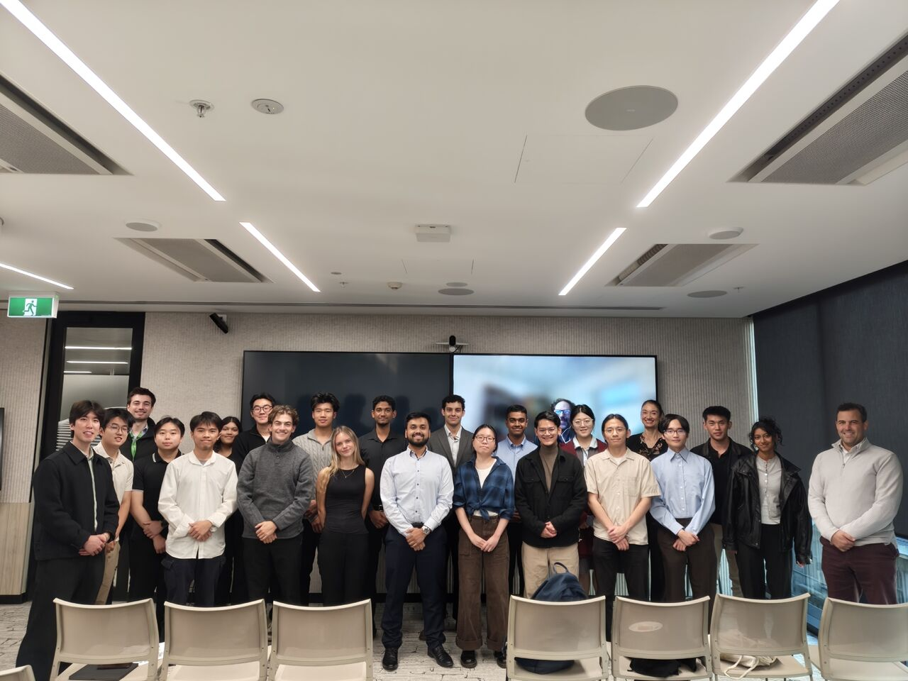
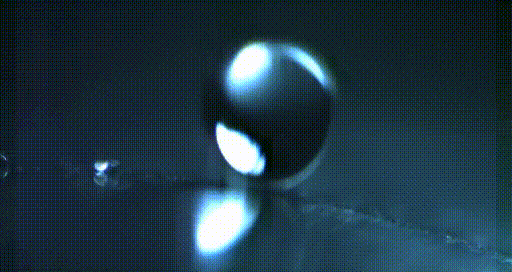
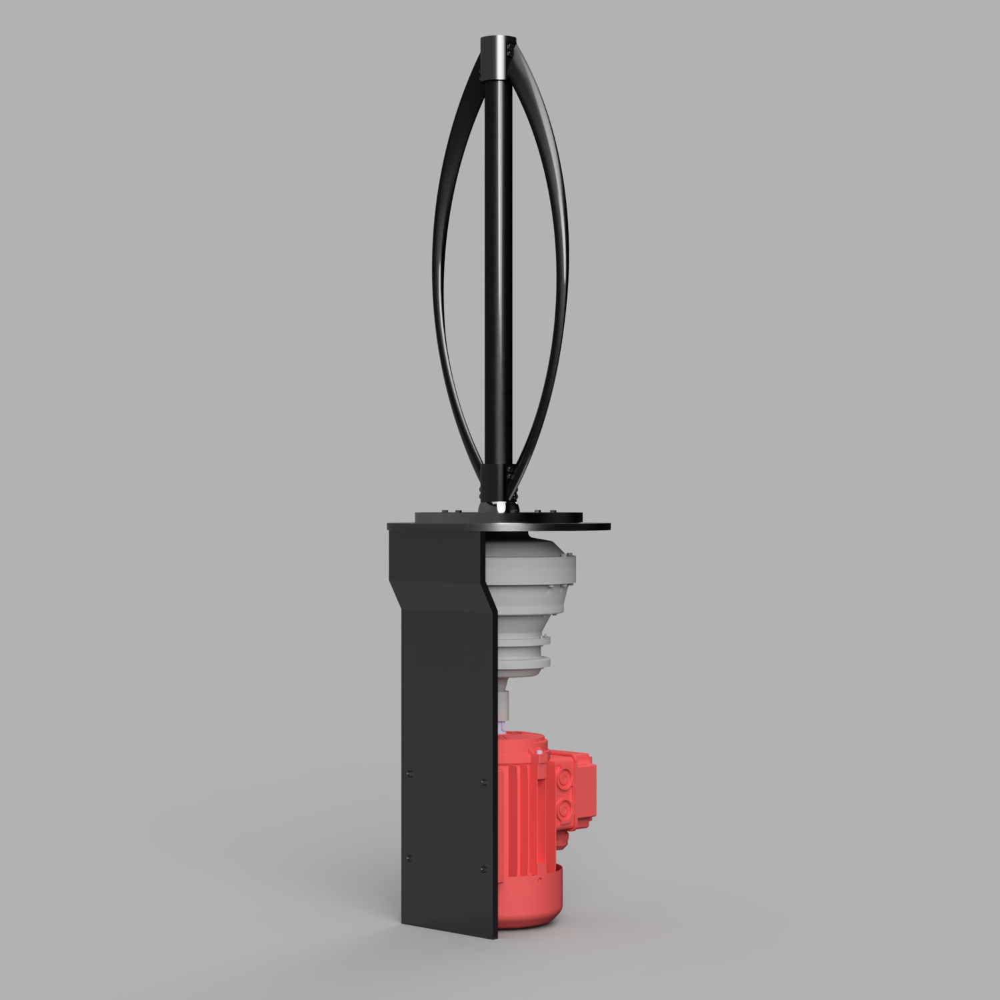
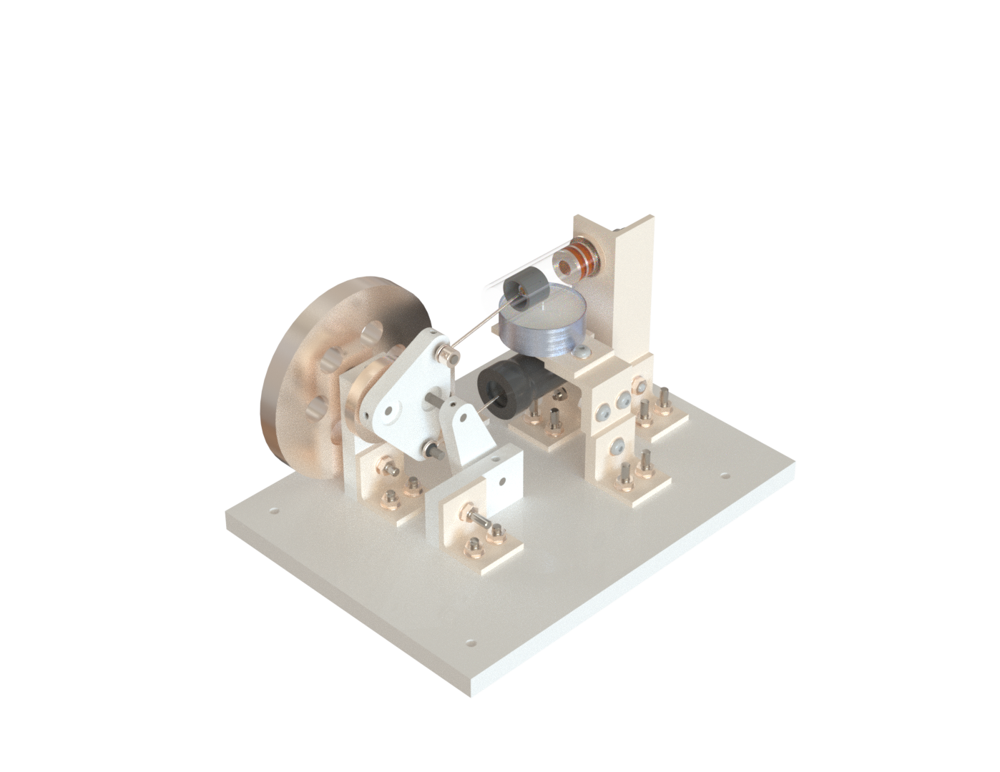
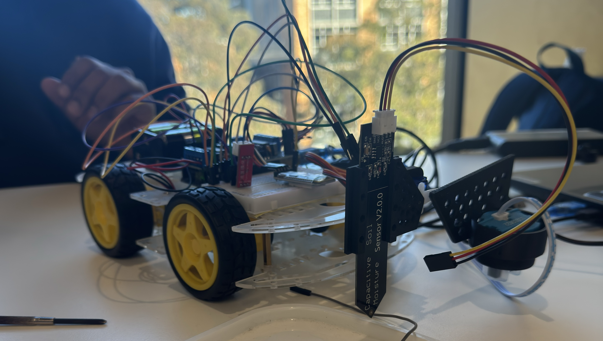
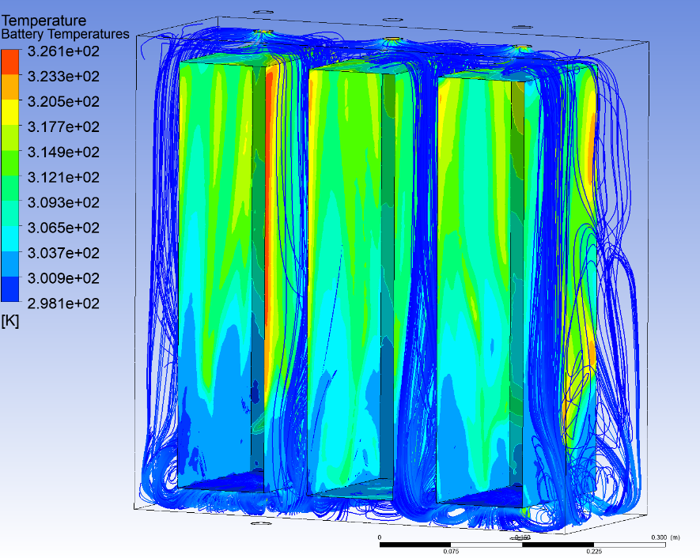
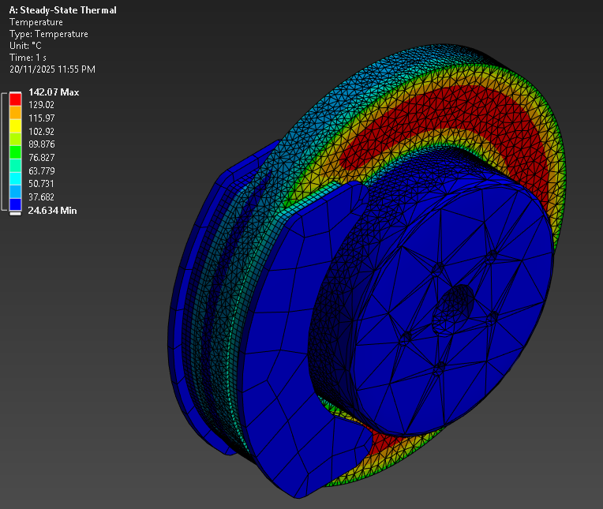

2026 / Student consulting
Student Engineering Consultant
Transgrid / UNSW
Industry-sponsored university consulting project involving technology assessment, maintenance recommendations and stakeholder presentations.
Engineering portfolio / Sydney, Australia
Mechanical Engineer | Product Design & Engineering
Final-year Mechanical Engineering and Computer Science student at UNSW, with experience in mechanical design, product development, experimental research and engineering consulting. I apply first-principles engineering to practical problems, from physical prototypes to complex infrastructure systems.
01 / Portfolio
Design, analysis and research across physical systems, energy infrastructure and embedded technology. Explore each case study for methods, contributions and outcomes.

Industry consulting / Energy infrastructure
A multidisciplinary UNSW student consulting project for Transgrid, assessing emerging maintenance technologies.
~$600,000 in projected annual savings (team estimate)

Honours thesis / Experimental research
Investigation of droplet deposition accuracy for industrial inkjet printing on rotating cylindrical substrates.

Mechanical design / Product development
A team-developed wind turbine concept intended to recover airflow generated by passing vehicles.
Manufacture-ready concept / $10,000 project budget

Mechanical design / Manufacturing
Application of thermodynamics, CAD and engineering analysis to the design and fabrication of a physical engine assembly.

Robotics / Mechatronics
[Insert project overview and development status.]
Case study awaiting verified details

CFD / Thermal design optimisation
CFD analysis and redesign of a liquid-cooled battery pack to improve coolant distribution and temperature uniformity.
Simulated peak temperature: ~86°C to ~53°C

FEA / Automotive engineering
Finite element analysis of a G80 BMW M3 front brake rotor to investigate its thermal, structural and vibrational behaviour under prolonged downhill braking conditions. Completed as part of MMAN4410 at UNSW.
02 / Project outcomes
Projected annual savings from our transmission maintenance recommendations.
Simulated reduction in peak temperature without increasing inlet velocity.
Change in maximum stress during mesh refinement, meeting the 1% convergence target.
Reduction in mesh element count through selective mesh sizing.
03 / Capabilities
Tools and engineering methods applied through coursework, research and project work.
04 / Experience
2026 / Student consulting
Transgrid / UNSW
Industry-sponsored university consulting project involving technology assessment, maintenance recommendations and stakeholder presentations.
2020 – Present / Employment
Continental Supermarket Ltd
Customer service, operational systems and training new staff.
2024 – 2025 / Employment
Australian Electoral Commission / Fujifilm Data Management Solutions
Handled sensitive information under strict confidentiality and data compliance requirements.
2021 – 2022 / Employment
Bullseye Education Ltd
Taught mathematics and English, developed learning materials and communicated progress to parents.
05 / Education
February 2021 – Expected December 2026
Relevant academic areas: mechanical design, manufacturing, thermodynamics, fluid mechanics, control systems and computing.
06 / About
I am a final-year student at UNSW with a particular interest in mechanical design, manufacturing and product development. I enjoy understanding how physical systems work and using that understanding to develop practical engineering solutions.
My projects span mechanical prototyping, thermal analysis, experimental research and multidisciplinary consulting. My Computer Science background complements this work through programming, embedded systems and digital engineering. I aim to keep developing my technical judgement and practical manufacturing skills as I enter the engineering profession.
07 / Contact
Feel free to contact me about graduate engineering opportunities, technical projects or potential collaborations.
Based in Sydney, Australia.